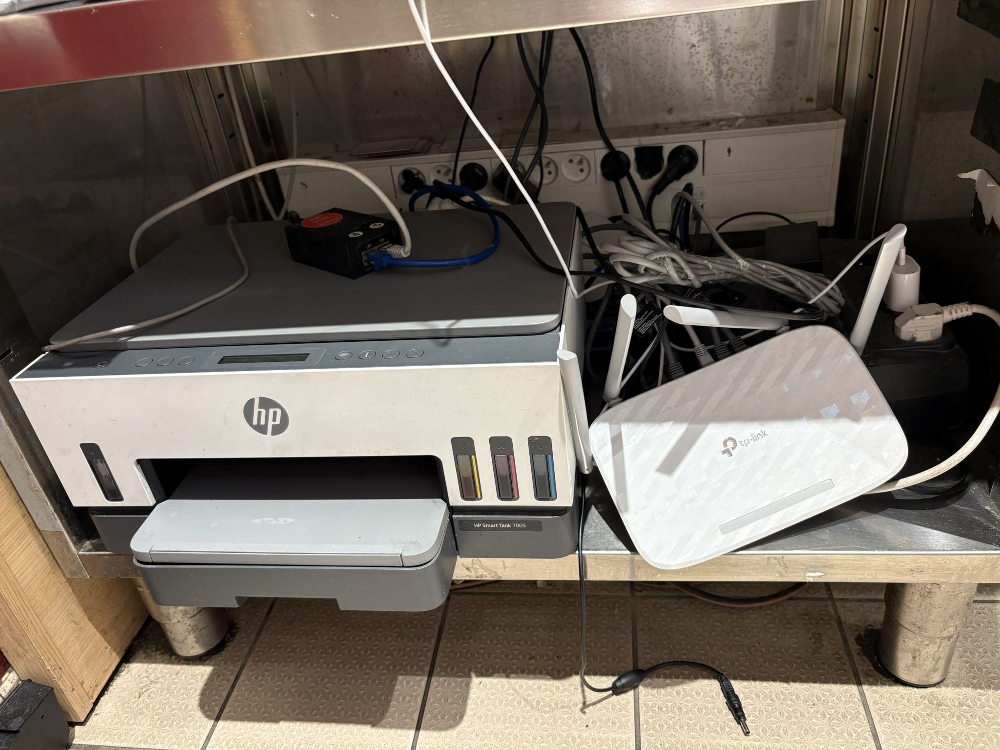
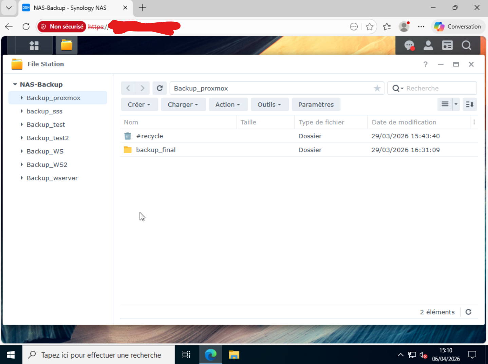
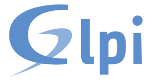
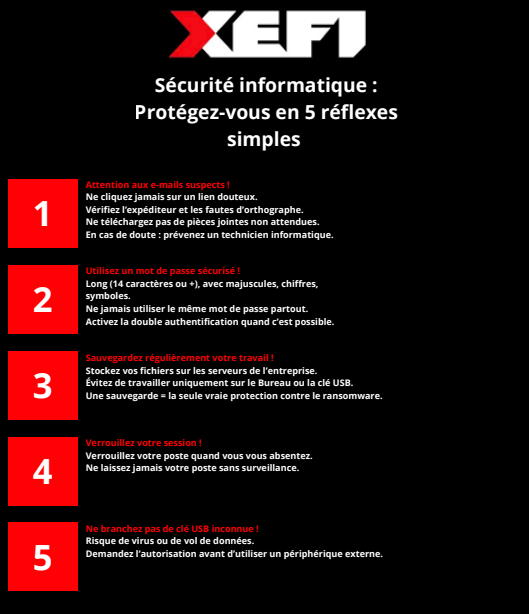
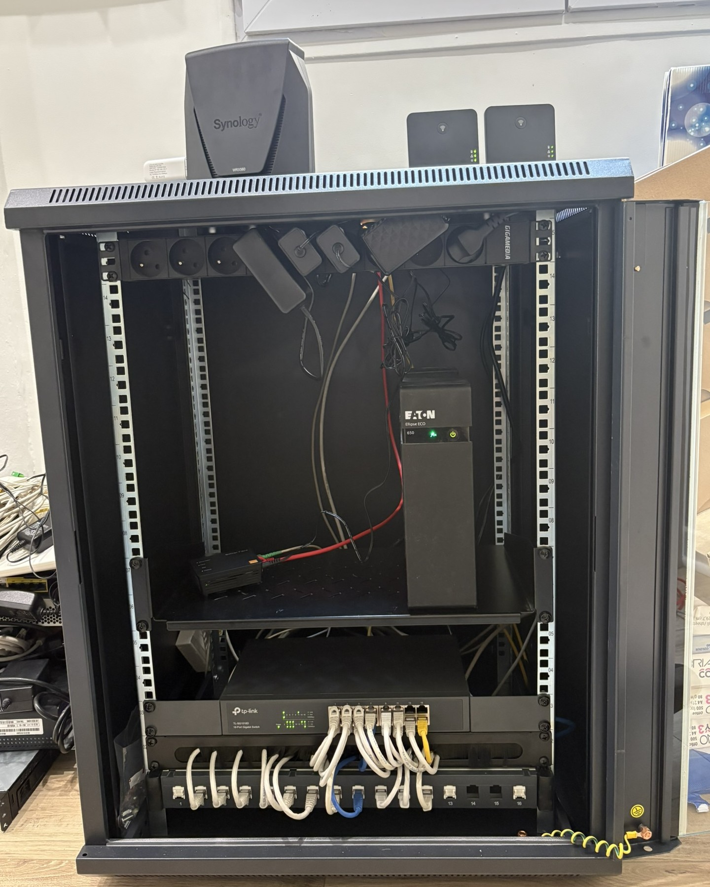
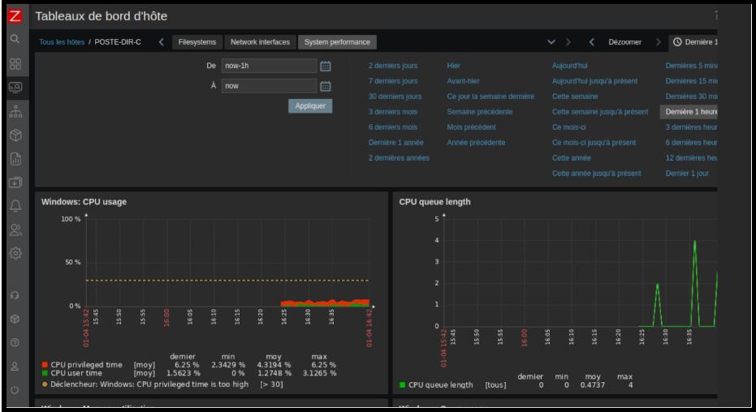

Projets

Automatisation de la configuration de switchs avec Ansible
Dans le cadre de mon stage de deuxième année à la Mairie de Taverny, j’ai participé à l’automatisation de la configuration de switchs réseau à l’aide d’Ansible. L’objectif était de faciliter l’administration du réseau en créant des playbooks permettant d’exécuter automatiquement certaines configurations sur les équipements. Pour cela, je me suis appuyé sur la topologie du réseau afin de recenser les différents switchs présents dans l’infrastructure . Afin d’organiser les différentes étapes du projet (découverte de l’environnement, création des playbooks, tests et validation), un diagramme de Gantt a également été réalisé.
Voir le diagramme de GanttVoir topologie réseau
Voir documentation

Analyse et cartographie de l'infrastructure réseau d'un restaurant
Dans le cadre de mon stage chez XEFI, j’ai réalisé une pré-visite technique au sein du restaurant Fresh Burritos afin d’analyser l’infrastructure réseau existante. L’objectif était d’identifier les équipements, comprendre l’organisation du réseau et détecter d’éventuelles anomalies. Pour cela, j’ai recensé les équipements (routeurs, switchs, bornes Wi-Fi, TPE, imprimantes) et analysé leurs connexions. Cette analyse m’a notamment permis d’identifier une boucle réseau ainsi qu’une organisation peu optimisée. J’ai également participé à la réalisation d’un schéma réseau pour préparer une future intervention technique.
Voir compte rendu interventionVoir schéma réseau

Création d'un site web en HTML et CSS
Dans le cadre d’un TP réalisé en première année de BTS SIO, j’ai développé un site web pour une entreprise fictive appelée Sanaya, spécialisée dans la vente de produits. L’objectif était de concevoir un site comprenant plusieurs pages (accueil, produits, catégories et fiche produit) en respectant un cahier des charges. Pour cela, j’ai créé différentes pages HTML reliées entre elles, intégré des images, une fiche descriptive du produit, une galerie d’images, un tableau comparatif et une section d’avis utilisateurs. Ce projet m’a permis de découvrir les bases du développement web et la structuration d’un site internet.
Lien pour visiter la page
Interconnexion sécurisée de sites et certification Stormshield
Dans le cadre de ma formation en BTS SIO, j’ai réalisé un projet d’interconnexion sécurisée entre deux sites. L’objectif était de permettre aux deux réseaux de communiquer entre eux tout en contrôlant et sécurisant les échanges. J’ai donc mis en place une organisation du réseau avec différentes zones, et configuré des règles pour autoriser uniquement les communications nécessaires. Cela permet de limiter les risques de sécurité tout en assurant le bon fonctionnement du réseau.
Voir lab5Voir lab5
Voir règle VPN
Voir entraînement certification

Backup avec un NAS (Synology)
Dans le cadre de ma formation en BTS SIO, j’ai réalisé un projet de mise en place d’une solution de sauvegarde avec un NAS. L’objectif était de sécuriser les données de l’entreprise en évitant leur perte en cas de problème. Pour cela, j’ai mis en place des sauvegardes automatiques d’un dossier partagé utilisé par les utilisateurs. Ces sauvegardes sont réalisées de manière régulière afin de garantir la protection des données dans le temps. J’ai également vérifié que les sauvegardes fonctionnaient correctement et qu’il était possible de récupérer les fichiers en cas de besoin. Ce projet m’a permis de comprendre l’importance de la protection des données et de la mise en place de solutions fiables pour assurer la continuité du service.
Voir compte rendu
Gestion des incidents et inventaire avec GLPI
Dans le cadre de ma formation en BTS SIO, j’ai utilisé l’outil GLPI pour gérer le patrimoine informatique et les demandes d’assistance. Dans un premier temps, j’ai réalisé un inventaire du parc en recensant différents équipements (ordinateurs, imprimantes, équipements réseau) et en renseignant leurs caractéristiques dans l’outil. Dans un second temps, j’ai simulé la gestion de tickets en traitant plusieurs incidents (problème d’impression, perte de connexion réseau, installation de logiciel) en suivant les étapes de diagnostic et de résolution. Ce travail m’a permis de comprendre le fonctionnement d’un outil de gestion de parc et de support utilisateur en entreprise.
Voir compte rendu (résolution tickets)Voir compte rendu (inventaire)

Installation PC clients
Dans le cadre de mon stage chez XEFI, j’ai réalisé l’installation et la préparation de postes clients suite à un besoin de renouvellement du parc informatique. Cette intervention faisait suite à une demande nécessitant la mise en service de nouveaux équipements pour les utilisateurs. Pour cela, j’ai suivi une procédure détaillée comprenant la configuration initiale de Windows, la suppression des logiciels inutiles, l’installation des logiciels nécessaires ainsi que les mises à jour du système. J’ai également participé au déploiement de plusieurs postes en série, en assurant leur bon fonctionnement avant leur mise à disposition aux utilisateurs.
Voir les pcVoir procédure

Affiche de sensibilisation à la cybersécurité
Dans le cadre de mon stage chez XEFI, j’ai réalisé l’installation et la préparation de postes clients suite à un besoin de renouvellement du parc informatique. Cette intervention faisait suite à une demande nécessitant la mise en service de nouveaux équipements pour les utilisateurs. Pour cela, j’ai suivi une procédure détaillée comprenant la configuration initiale de Windows, la suppression des logiciels inutiles, l’installation des logiciels nécessaires ainsi que les mises à jour du système. J’ai également participé au déploiement de plusieurs postes en série, en assurant leur bon fonctionnement avant leur mise à disposition aux utilisateurs.
Voir affciche
Mise à niveau d'une baie de brassage pour une agence cliente
Dans le cadre de mon stage chez XEFI, j’ai réalisé une intervention sur une baie de brassage au sein d’une agence cliente. L’objectif était d’analyser l’infrastructure réseau existante, d’identifier les équipements présents et de réorganiser la baie afin d’améliorer la lisibilité, la gestion et la maintenance du réseau. Cette intervention comprenait le remplacement et l’installation de nouveaux équipements, ainsi que l’optimisation du câblage. Un état avant/après a également été réalisé afin de documenter les modifications apportées et assurer un meilleur suivi du matériel.
Voir compte rendu interventionGestion des incidents avec NinjaOne
Dans le cadre de mon stage chez XEFI, j’ai été amené à gérer des demandes d’assistance utilisateurs via l’outil de ticketing NinjaOne. Les utilisateurs contactaient le support par téléphone pour signaler des incidents (problème Wi-Fi, messagerie, installation de logiciels, etc.), que j’enregistrais ensuite dans l’outil afin d’assurer le suivi et la traçabilité des demandes. J’ai également réalisé des actions de support, comme la réinitialisation d’un mot de passe Outlook à la demande d’un utilisateur, en lui communiquant les nouvelles informations de connexion. Cette activité m’a permis de participer au processus de gestion des incidents et d’assistance aux utilisateurs.
Voir ticket1 Voir ticket2 Voir ticket3 Voir tikcet4 Voir résolution
Supervision avec Zabbix
Dans le cadre de ma formation en BTS SIO, j’ai réalisé un projet d’installation et de configuration d’un outil de supervision. L’objectif était de surveiller une machine afin de détecter d’éventuels problèmes. Pour cela, j’ai mis en place une solution permettant de suivre l’état d’un poste depuis une interface de supervision. Cela permet de voir rapidement si la machine fonctionne correctement ou si un problème apparaît. J’ai également vérifié que les informations remontaient bien dans l’interface et que la supervision était fonctionnelle. Ce projet m’a permis de comprendre l’importance de la surveillance des équipements pour détecter rapidement les problèmes et réagir efficacement.
Voir installation